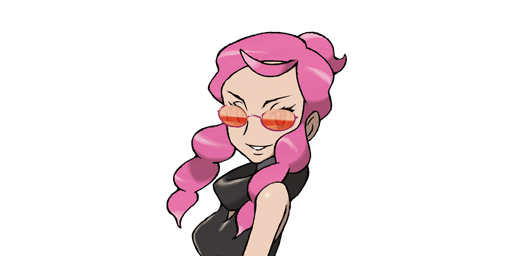
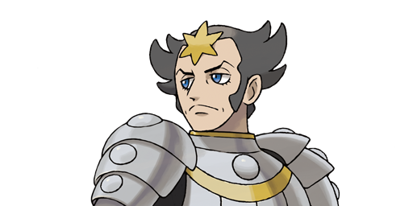
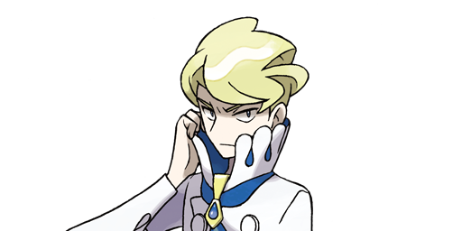
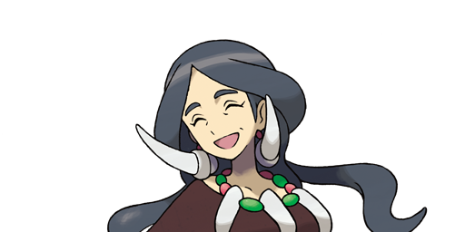

Malva’s team of fire types is sure to leave you burnt if you’re unprepared. Her team is a lvl 63 Pyroar with Rivalry, a lvl 63 Torkoal with White Smoke, a level 63 Chandelure with Flame Body and a level 65 Talonflame with Flame Body as well.

Wikstrom comes from a family of knights and has a solid team of tough steel types. His team is: a level 63 Klefki with Prankster, a level 63 Probopass with Sturdy, a level 63 Scizor with Technician and a level 65 Aegislash with its signature ability Stance Change.

Siebold is a famous chef who wields formidable water types in the Elite Four Challenge. He leads with a level 63 Clawitzer whose Mega Launcher ability powers up all its pulse moves for some serious damage. The rest of his team includes a level 63 Gyarados with Intimidate, a level 63 Starmie with Illuminate and level 65 Barbaracle with Tough Claws.

Drasna boasts the powerful Dragon type. She has a level 63 Dragalge with Poison Point, a level 63 Druddigon with Rough Skin, a level 63 Altaria with Natural Cure and a level 65 Noivern with Frisk.

Diantha is a famous actress and the Champion of the Kalos region. He has a full team of six powerful Pokemon. Her ace is a powerful level 68 Trace Gardevoir with the ability to Mega Evolve, further boosting is power. The rest of her team includes a level 64 Hawlucha with Limber, a level 65 Tyrantrum with Strong Jaw, a level 65 Aurorus with Refrigerate, a level 65 Gourgeist with Pickup, and a level 66 Goodra with Sap Sipper.